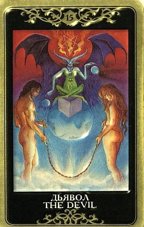

В самом простом смысле Дьявол указывает, что человек не очень-то держит под контролем ситуацию, о которой идет речь, и может навлечь на себя массу неприятностей.
Он предупреждает, что в потакании своим слабостям вопрошающий переходит допустимые границы.
Или что происходит злоупотребление силой (любой, в том числе эротической), и это тоже суть потакание своей слабости. Или имеет место сугубое подчинение кому-то или зависимость от чего-то, и ни к чему хорошему это не приведет.

Дьявол указывает на подавляющую ситуацию, на то, что какая-то личность или какая-то слабость приобретает над нами слишком большую власть, лишает нас свободы и нормального самопроявления.
Это может быть и просто дурное внешнее влияние. В итоге мы начинаем делать как раз то, чего не должны бы.
Из всех Арканов Таро Дьявол представляется самым трудным для понимания, потому что у каждого он свой.
Уэйт считал, что главное проявление Дьявола – страх, другие авторы подчеркивали возбуждение низменных инстинктов, третьи полагают, что это темное прошлое, от которого человек каким-то образом зависим.
Общими для всех можно, пожалуй, считать лишь ситуацию зависимости от кого-то или чего-то, слабую волю, постыдный провал благих намерений, а также действия, совершаемые вопреки собственным убеждениям.
Темная сторона всех вещей, а каких именно - покажут другие карты.
Чтобы не сбиться с пути в толковании (а Дьявол имеет к сбиванию с пути прямое отношение), надо помнить, что вообще происходит, когда совершается расклад.
Таро – это мудрый и проницательный Друг.
Присутствует огромное искушение проигнорировать правила, сбиться с пути истинного под влиянием искушения, страха или иного давления.
Главным образом - срезать старые прямые дороги, не практиковать терпение и труд, потакать своим прихотям.
Дьявол отклоняет от Умеренности и дело заканчивается Башней.
Так или иначе, эта карта показывает, что мы играем с огнем.
На глубинном уровне она означает, что наш вопрос затрагивает, прежде всего, теневые стороны нашей личности, или же в ситуации явно присутствует какое-то дурное влияние.
Чаще всего по Дьяволу проходит лихорадочная одержимость чем-либо (сильное увлечение, наносящее явный вред деловым обязанностям, потеря совести из-за страсти, искушение нечестных приобретений и тому подобные вещи).
Вообще выпадение Дьявола само по себе можно рассматривать как совет срочно возвращаться на путь истинный и предупреждение, что упорствуя в том, что символизирует эта карта, человек жестоко поплатится. Бывает, что дать обратный ход уже невозможно (вариант героиновой зависимости).
Пока выбор еще есть - надо уносить ноги, не оглядываясь.
ЛИЧНЫЕ ОТНОШЕНИЯ
Безусловно, привязанность, сильное влечение, вспышка страсти. Обычно из серии «бес попутал».
Дьявол часто открывается для тех, кто испытывает искушение вступить в любовную связь на стороне или совершенно потерял из-за кого-то голову.
Стремление и желания настолько сильны, что полностью затмевают голос разума, мешая реально оценивать человека и ситуацию.
Партнер – роковая страсть, истинная тень, индикатор темной стороны человека.
Он искушает (не обязательно сознательно) и несет с собой примитивную энергетику, заставляющую забыть обо всем, потерять себя.
По Дьяволу проходят не только жгучие искушения, но и просто подавление со стороны какого-то человека, отрицательное влияние – он контролирует, запугивает, разрушает «я» партнера, навязывает свой образ мысли.
Вообще указание на нездоровые разрушительные взаимоотношения – едва ли не самая частая роль Пятнадцатого Аркана в раскладах!
Могут быть такие проявления как финансовая зависимость, сексуальная одержимость, шантаж, предательство, физическое, эмоциональное и сексуальное насилие.
Нередко всплывает проблема ревности, контроля и манипулирования.
Типична также тематика «обесчещивания», бесчестья. Сексуальные аномалии, всякий «двусмысленный шарм» также находится в ведении пятнадцатого Аркана.
Возможна просто бурная, но крайне непродолжительная страсть, сопровождаемая ощущением, что лучше было бы в эту связь все-таки не вступать.
Даже обеспечив пару-тройку острых переживаний, Дьявол в конечном итоге несет несчастья и страдания.
Да, мы можем сказать: это был опыт, это многому меня научило, и все же, окидывая взглядом свою биографию на излете дней, мы в лучшем случае поморщимся – этого пятна на ней вполне могло бы и не быть.
А в худшем – будем иметь повод для раскаяния, выдающегося по запоздалости и безнадежности.
Дьявол являеется индикатором связи, в которой человек очень далеко отступил от своих принципов, понятий о чести и честности. Во временном угаре они могут показаться условными и лишними, но потом совесть ощутимо о себе напомнит.
Иногда Дьявол указывает на кармически неизбежное зло, нечто тайное и предопределенное.
Кроме значения искушения и насилия над светлой природой, Дьявол (как и астрологически Лилит) имеет кармическое значение – рок, фатум, обреченность.
Об этом часто забывают, хотя это подчеркивается в старых толкованиях. Присутствие Дьявола в раскладе делает обстоятельства роковыми, фатальными, даже если и не порочными в корне.
Его появление – это знак рока, довлеющего над ситуацией.
Иногда Дьявол указывает, что глубокая и страстная связь, существующая между людьми, сложилась еще в прошлом, и теперь произошло соединение кармических предпосылок.
Но вот основание этой связи – мрачное, и в прошлом между ними имели место огромные трудности, возможно, ненависть, насилие, невыполненные обещания, роковые клятвы, использование каких-то магических приворотов или что-то тому подобное.
А теперь эти двое постоянно бередят застарелые раны друг друга.
Дьявол заметно энергетизирует сферу инстинктов.
Одна из причин, почему из описываемых Пятнадцатым Арканом отношений сложно выбраться – это набор интенсивных сексуальных переживаний.
Барахтаясь в пучине страсти, человек может прекрасно сознавать, что увяз не на шутку и хорошо бы выбраться, но как это сделать не представляет.
Иногда карта указывает на что, что в деле не обошлось без магических приворотов, и это состояние «одержимости» возникло как результат каких-то манипуляций, имеющих целью привязать к себе.
Один партнер играет с другим как кошка с мышью, сознательно или нет, идет на хитроумные уловки, чтобы привязать, заполучить, вернуть, овладеть, отомстить – список «мечтаний» можно продолжать.
Также Дьявол может указывать на связь, в которой любовь и ненависть присутствуют одновременно и в высокой концентрации. Присутствуют и некотролируемое влечение, и большая враждебность (и желание избавиться, и страх потерять, свободы ноль...в общем, типичные проявления Лилит).
По Дьяволу могут идти и сложные чувства, связанные с расторжением мучительной связи – например, разводом, по ходу которого отношения выясняются до предела, обнажающего все неблаговидные чувства.
Перейти все границы приличий можно запросто, какого бы хорошего мнения человек ни был о своей воспитанности.